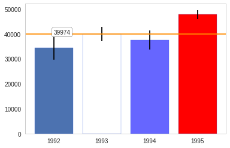

Plotting With Uncertainty (Part II)
This is an implementation of the harder option for Assignment 3 of coursera's Applied Plotting, Charting & Data Representation in Python.
Description
A challenge that users face is that, for a given y-axis value (e.g. 42,000), it is difficult to know which x-axis values are most likely to be representative, because the confidence levels overlap and their distributions are different (the lengths of the confidence interval bars are unequal). One of the solutions the authors propose for this problem (Figure 2c) is to allow users to indicate the y-axis value of interest (e.g. 42,000) and then draw a horizontal line and color bars based on this value. So bars might be colored red if they are definitely above this value (given the confidence interval), blue if they are definitely below this value, or white if they contain this value.
Harder option: Implement the bar coloring as described in the paper, where the color of the bar is actually based on the amount of data covered (e.g. a gradient ranging from dark blue for the distribution being certainly below this y-axis, to white if the value is certainly contained, to dark red if the value is certainly not contained as the distribution is above the axis).
Imports
All the imports were created by third-parties (taken from pypi).
from tabulate import tabulate
import matplotlib.pyplot as pyplot
import numpy
import pandas
import scipy.stats as stats
import seaborn
Some Plotting Setup
%matplotlib inline
style = seaborn.axes_style("whitegrid")
style["axes.grid"] = False
seaborn.set_style("whitegrid", style)
The Data
There data set will be four normally-distributed, randomly generated data sets each representing a simulated data set for a given year.
numpy.random.normal
This is from the numpy.random.normal doc-string:
normal(loc=0.0, scale=1.0, size=None)
Draw random samples from a normal (Gaussian) distribution.
The probability density function of the normal distribution, first derived by De Moivre and 200 years later by both Gauss and Laplace independently1, is often called the bell curve because of its characteristic shape (see the example below).
The normal distributions occurs often in nature. For example, it describes the commonly occurring distribution of samples influenced by a large number of tiny, random disturbances, each with its own unique distribution2.
Parameters
loc : float or arraylike of floats
Mean ("centre") of the distribution.
scale : float or arraylike of floats
Standard deviation (spread or "width") of the distribution.
size : int or tuple of ints, optional
Output shape. If the given shape is, e.g., (m, n, k), then
m * n * k samples are drawn. If size is None (default),
a single value is returned if loc and scale are both scalars.
Otherwise, np.broadcast(loc, scale).size samples are drawn.
Creating the data
numpy.random.seed(12345)
data = pandas.DataFrame([numpy.random.normal(33500,150000,3650),
numpy.random.normal(41000,90000,3650),
numpy.random.normal(41000,120000,3650),
numpy.random.normal(48000,55000,3650)],
index=[1992,1993,1994,1995])
description = data.T.describe()
print(tabulate(description, headers="keys", tablefmt="orgtbl"))
| 1992 | 1993 | 1994 | 1995 | |
|---|---|---|---|---|
| count | 3650 | 3650 | 3650 | 3650 |
| mean | 34484.1 | 39975.7 | 37565.7 | 47798.5 |
| std | 150473 | 88558.5 | 120317 | 54828.1 |
| min | -528303 | -287127 | -382709 | -138895 |
| 25% | -67555.3 | -21665.5 | -45516.9 | 11680 |
| 50% | 31756.2 | 41001.8 | 39197.2 | 49103.4 |
| 75% | 135081 | 99766.9 | 121367 | 84272 |
| max | 622629 | 358328 | 423793 | 262364 |
Comparing the sample to the values fed to the normal function it appears that even with 3,650 values, it's still not exactly what we asked for.
data.T.plot.kde()
seaborn.despine()

1992, the plot with the largest spread looks kind of lumpy. Their means look surprisingly close, but that's probably because the large standaard deviation distorts the scale.
data.T.plot.box()
seaborn.despine()
 The box-plot shows once again that there centers are relatively close. But 1992 and 1994 have considerably more spread than 1993 and especially more than 1995.
The box-plot shows once again that there centers are relatively close. But 1992 and 1994 have considerably more spread than 1993 and especially more than 1995.
Interval Check
This is the class that implements the plotting. It colors the bar-plots based on whether the value given is within a bar's confidence interval (white), below the confidence interval (blue) or above the confidence interval (red). It's set up to work with the easiest case so the color_bars method has to be overridden to make it work for this case.
class IntervalCheck(object):
"""colors plot based on whether a value is in range
Args:
data (DataFrame): frame with data of interest as columns
confidence_interval (float): probability we want to exceed
"""
def __init__(self, data, confidence_interval=0.95):
self.data = data
self.confidence_interval = confidence_interval
self._intervals = None
self._lows = None
self._highs = None
self._errors = None
self._means = None
self._errors = None
return
@property
def intervals(self):
"""list of high and low interval tuples"""
if self._intervals is None:
data = (self.data[column] for column in self.data)
self._intervals = [stats.norm.interval(alpha=self.confidence_interval,
loc=datum.mean(),
scale=datum.sem())
for datum in data]
return self._intervals
@property
def lows(self):
"""the low-ends for the confidence intervals
Returns:
numpy.array of low-end confidence interval values
"""
if self._lows is None:
self._lows = numpy.array([low for low, high in self.intervals])
return self._lows
@property
def highs(self):
"""high-ends for the confidence intervals
Returns:
numpy.array of high-end values for confidence intervals
"""
if self._highs is None:
self._highs = numpy.array([high for low, high in self.intervals])
return self._highs
@property
def means(self):
"""the means of the data-arrays"""
if self._means is None:
self._means = self.data.mean()
return self._means
@property
def errors(self):
"""The size of the errors, rather than the ci values"""
if self._errors is None:
self._errors = self.highs - self.means
return self._errors
def print_intervals(self):
"""print org-mode formatted table of the confidence intervals"""
intervals = pandas.DataFrame({column: self.intervals[index]
for index, column in enumerate(self.data.columns)},
index="low high".split())
try:
print(tabulate(intervals, tablefmt="orgtbl", headers="keys"))
except ImportError:
# not supported
pass
return
def setup_bars(self, value):
"""sets up the horizontal line, value and bars
Args:
value (float): value to compare to distributions
Returns:
bars (list): collection of bar-plot objects for the data
"""
figure = pyplot.figure()
axe = figure.gca()
x_labels = [str(index) for index in self.data.columns]
bars = axe.bar(self.data.columns, self.means, yerr=self.errors)
for bar in bars:
bar.set_edgecolor("royalblue")
pyplot.xticks(self.data.columns, x_labels)
pyplot.axhline(value, color='darkorange')
pyplot.text(self.data.columns[0], value, str(value),
bbox={"facecolor": "white", "boxstyle": "round"})
return bars
def color_bars(self, value, bars):
"""colors the bars based on the value
this is the easiest case
Args:
value (float): value to compare to the distribution
bars (list): list of bar-plot objects created from data
"""
for index, bar in enumerate(bars):
if value < self.lows[index]:
bar.set_color('crimson')
elif self.lows[index] <= value <= self.highs[index]:
bar.set_color('w')
bar.set_edgecolor("royalblue")
else:
bar.set_color("royalblue")
return
def __call__(self, value):
"""plots the data and value
* blue bar if value above c.i.
* white bar if value in c.i.
* red bar if value is below c.i.
Args:
value (float): what to compare to the data
"""
bars = self.setup_bars(value)
self.color_bars(value, bars)
return
Harder
This is the class that implements the harder coloring scheme were a gradient is used instead of just three colors.
class Harder(IntervalCheck):
"""implements the harder problem
Uses a gradient instead of just 3 colors
"""
def __init__(self, *args, **kwargs):
super(Harder, self).__init__(*args, **kwargs)
self._colors = None
self._proportions = None
return
@property
def colors(self):
"""array of rgb color triples"""
if self._colors is None:
# could have been done with straight fractions
# but I find it easier to think in terms of
# 0..255
base = list(range(0, 255, 51))
full = [255] * 6
blue = numpy.array(base + full)
blue = blue/255
base.reverse()
red = numpy.array(full + base)
red = red/255
tail = base[:]
base.reverse()
green = numpy.array(base + [255] + tail)/255
self._colors = numpy.array([red, green, blue]).T
return self._colors
@property
def proportions(self):
"""array of upper limits for the value to find the matching color
"""
if self._proportions is None:
self._proportions = numpy.linspace(0.09, 1, 10)
return self._proportions
def color_bars(self, value, bars):
"""colors the bars based on the value
this is the harder case
Args:
value (float): value to compare to the distribution
bars (list): list of bar-plot objects created from data
"""
mapped_values = [(value - low)/(high - low)
for low, high in self.intervals]
for bar_index, mapped_value in enumerate(mapped_values):
for color_index, proportion in enumerate(self.proportions):
if mapped_value < proportion:
color = self.colors[color_index]
bars[bar_index].set_color(color)
bars[bar_index].set_edgecolor("royalblue")
break
return
Examples
First, I'll take a look at the values for the confidence intervals so that I can find values to plot. Here are the confidence intervals for the data I created.
plotter = Harder(data=data.T)
plotter.print_intervals()
| 1992 | 1993 | 1994 | 1995 | |
|---|---|---|---|---|
| low | 29602.5 | 37102.7 | 33662.4 | 46019.8 |
| high | 39365.7 | 42848.6 | 41469 | 49577.2 |
Here's a value that is below all the confidence intervals.
value = 29000
plotter(value)

Here's a value that is within 1992's confidence interval but below the other years.
value = 36000
plotter(value)

Here's a value within 1993's and 1994's confidence intervals, but above 1992's and below 1995's confidence intervals.
value = 39974
plotter(value)

Here's a value that is within 1993's confidence interval only.
value = 42000
plotter(value)

Here's a value within only 1995's confidence interval.
value = 49500
plotter(value)

And finally, a value that's above all the confidence intervals.
value = 50000
plotter(value)

Citations
Footnotes:
Wikipedia, "Normal distribution", http://en.wikipedia.org/wiki/Normal_distribution
P. R. Peebles Jr., "Central Limit Theorem" in "Probability, Random Variables and Random Signal Principles", 4th ed., 2001, pp. 51, 51, 125.

 The box-plot shows once again that the centers are relatively close. But 1992 and 1994 have considerably more spread than 1993 and especially more than 1995.
The box-plot shows once again that the centers are relatively close. But 1992 and 1994 have considerably more spread than 1993 and especially more than 1995.